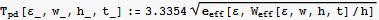
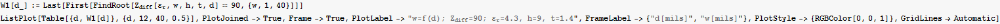

: Differential impedance between trace [Ω]
: Intrinsic capacitance of the trace [nF/m]
: Intrinsic inductance of the trace [nH/m]
: Propagation delay [ns/m]
Microstrip Impedance Calculation
by Mikica B Kocic
Microstrip is one topology used to provide trace-controlled impedance on a PCB for digital circuits. Microstrip lines are exposed to both air and a dielectric referenced to a planar structure. Purpose of this notebook is to be used to calulate impedance and differential impedance of the microstrip topology. Sample calculations are provided for 90 and 100 Ω differential impedance in standard 4-layer PCB stackup.
References
[1] Sophocles, J. Orfanidis, Electromanetic Waves and Antennas; Chapter 9: Transmission Lines
http://www.ece.rutgers.edu/~orfanidi/ewa
[2] Width and Effective Dielectric Constant Equations for Design of Microstrip Transmission Lines, Rogers Corporation
http://www.rogerscorporation.com/acm
[3] E. Hammerstad and O. Jensen, "Accurate Models for Microstrip Computer-Aided Design", 1980 IEEE MTT-S International Symposioum Digest, (May 1980) Washington D.C., IEEE catalog #80CH1545-3MTT, pp 407-409
[4] Microstrip Analysis/Synthesis Calculator
http://mcalc.sourceforge.net
[5] AWR Transmission Line Calculator
http://www.appwave.com/products/txline.html
[6] PCB Trace Impedance Calculator
http://www.emclab.umr.edu/pcbtlc
[7] H. W. Johnson and M. Graham, High-Speed Digital Design: A Handbook of Black Magic; 1st ed. 1993, Prentice Hall, ISBN 0133957241
[8] H. W. Johnson, High Speed Signal Propagation: Advanced Black Magic; 1st ed. 2003, Prentice Hall, ISBN 013084408X
[9] M. I. Montrose, Printed Circuit Board Design Techniques for EMC Compliance; 2nd ed. 2000, Wiley-IEEE, ISBN 0780353765
[10] IPC Standard IPC-D-317A
Parameter Definitions
Geometric Parameters
w : Wdith of the trace
t : Thickness of the trace
h : Distance between signal trace and reference plane
s : Trace edge-to-edge spacing
d : Trace center-to-center spacing (d=s+w)
Note: Consistent dimensions for w, t, h, d or s should be used.
Electric Parameters
: Dielectrict constant of the planar material : Characteristic impedance [Ω]
: Characteristic impedance [Ω]
: Differential impedance between trace [Ω]
: Intrinsic capacitance of the trace [nF/m]
: Intrinsic inductance of the trace [nH/m]
: Propagation delay [ns/m]
Formulae
Formulae included in this notebook originate from [1] E. Hammerstad and O. Jensen, "Accurate Models for Microstrip Computer-Aided Design". Formulae are further elaborated in [2] and [3]. The accuracy is better than 0.2% for 0.1≤ w/h≤100 and .Practical values of the width-to-height ratio are in the range 0.1≤ w/h≤10 and practical values of charactersitic impedances are between 10 and 200 Ω.
Zero-frequency effective relative permittivity as a function of microstrip trace geometry
Effective trace width as a function of other parameters
Zero-frequency characteristic impedance as a function of trace geometry
Propagation delay as a function of trace geometry

Intrinsic capaciotance and inductance as a function of trace geometry
Differential characteristic impedance between traces as a function of trace geometry
Test Calculations
Sample Layer Stackup
4001: 1.6mm Standard 4-layer PCB Stackup
FR-4 core with 2116 prepreg. Dielectric constant .
4001: 1.6mm Standard 4-layer PCB Stackup
Manufacturing Constraints:
- Minimum trace width (w) is 6 mils.
- Minimum space between traces (s) is 6 mils.
- Minimum drill hole size is 20 mils (0.5mm).
Top Layer: 0.037 mm 1.457 mils
Prepreg 2216: 0.230 mm 9.044 mils
Inner Layer: 0.035 mm 1.388 mils
Core FR-4: 1.060 mm 41.732 mils
Inner Layer: 0.035 mm 1.388 mils
Prepreg 2216: 0.230 mm 9.044 mils
Bottom Layer: 0.037 mm 1.457 mils
--------------------------------------
Total: 1.664 mm 65.521 mils
Default Parameters
Utility Functions
